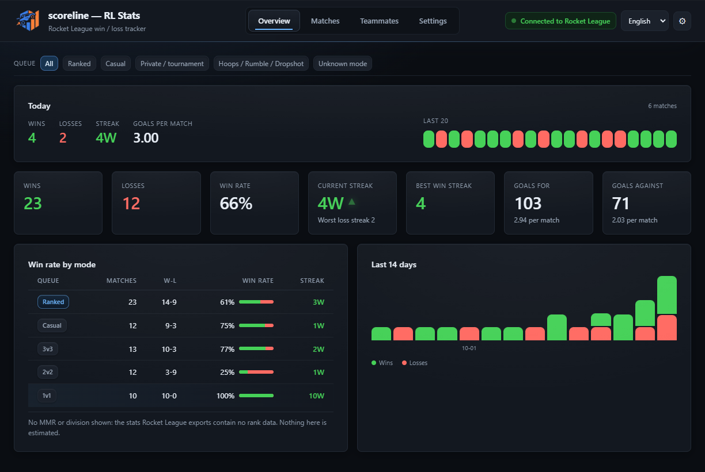

A live match card
While a match runs, the running score, the current result and a goal flash the moment a goal lands — for both sides.
scoreline reads the stats Rocket League already exports and turns them into a clean history — win rate, streaks, goals, teammates and a live scoreboard over the game. On your PC. No account, no cloud, no guessing.

No macros, no screenshots of the scoreboard, no spreadsheet. Open the app and the numbers are there.
While a match runs, the running score, the current result and a goal flash the moment a goal lands — for both sides.
Mode, score, goals, assists, saves and duration for every game. Filter by queue, teammate or date, and export to JSON or CSV.
See who you actually win with, sorted by how often you play together — both numbers, never just the flattering one.
Turn the last 7 or 30 days into one block: win rate, best and current streak, and how you compare with the window before it.
Scoreline says how you queued — confirmed by one click, or inferred from party-leader flags. When the game doesn't say, it admits it instead of guessing.
Pick your in-game name once from the list of players the app has seen. Every match you already played is re-attributed — nothing recorded before the name was set is lost.
The full scoreboard: both teams, every goal, ball speeds, and delete-only actions for the odd game that slipped in.
When it's installed as a normal app, new versions download in the background and install on restart — and never mid-match.
A tiny always-on-top scoreboard you can park in any of nine corners — your score against theirs, updating live. It never steals focus from Rocket League, and in lite mode it stays out of the way entirely.
scoreline doesn't hook the game or read its memory. Rocket League already exposes a local stats socket — scoreline simply listens to it.
Open Rocket League once so it creates its stats API file. scoreline finds it by itself — every Steam library, the Epic launcher's manifests, the real Documents folder (OneDrive too), and a scan of your drives.
It connects to the socket the game already opens on your own PC. Nothing is injected and no game files are changed.
Every match lands in your history as it ends, and the live card keeps score while you're in a game.
Only if your install lives somewhere truly unusual does Settings offer a manual TAGame\Config folder field — everything else is automatic.
A dark, quiet dashboard built to be read at a glance after a match. Click any shot to enlarge.
An honest tracker is worth more than an optimistic one.
No injection, no memory reading, no game-file edits. It reads only the stats socket the game itself opens, on localhost.
No account and no server. Your matches and settings stay in a folder on your own PC, and you can export them any time.
Windows 10 or 11, 64-bit. Take the installer for automatic updates, or the portable build if you'd rather not install anything at all.
Published on GitHub — scoreline001/rl-stats.
It only reads. scoreline connects to the local stats socket Rocket League itself opens and never injects, reads memory, or edits game files. Close the app and the game is untouched.
The app can be open any time. It records matches while you play; whatever you've already played stays in your history afterwards. The game has to be launched at least once before the stats API file exists.
Because the game doesn't export it. The stats Rocket League writes contain wins, losses, goals and the like — but no rank. Rather than estimate, scoreline says so plainly.
Both. scoreline reads every Steam library folder (including libraries on other drives), the Epic Games Launcher's own manifests, and your real Documents folder — wherever the config lives, it's found automatically. If an install is somewhere truly unusual, add its TAGame\Config folder in Settings.
In a folder on your PC under your user profile (%APPDATA%\scoreline). Nothing is uploaded anywhere, and you can export the whole history to JSON or CSV from the Matches tab.
English and French, switchable in Settings.
When you use the installer build, scoreline checks for a new version shortly after launch and then every few hours. It downloads quietly in the background and offers a restart once it's ready — never during a match. Portable builds open the download page instead.
Windows SmartScreen may warn "unknown publisher" because releases aren't code-signed — that's a certificate cost, not a red flag. Click More info → Run anyway. scoreline isn't open source, so download it only from GitHub Releases.